FM-1 MIDI Processor
Custom firmware that turns the M-VAVE FM-1 synth into a pocket MIDI processor. It filters, remaps and transforms MIDI from its TRS and USB inputs, fires lists of messages from a single trigger, and shows everything on a scrolling MIDI monitor.
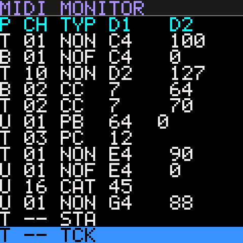
The screen pictures on this page are drawn from the firmware's screen designs with its own font and colours. The values in them are examples.
Getting started
- Install the firmware. Open Flash firmware in desktop Chrome or Edge, connect the FM-1 by USB and follow the three steps. It takes about a minute.
- Connect your MIDI. Plug sources into TRS MIDI IN (3.5 mm) or send MIDI to the FM-1 over USB. Everything that passes the pipeline comes out of USB MIDI OUT, to your computer, DAW or USB host.
- Watch it arrive. At power-up the FM-1 shows its name and version for 2 seconds, then the MIDI Monitor. Every message that arrives is listed there, coloured by what the pipeline did with it.
- Build a patch. Set up filters, remaps and triggers; changes apply at once. Save the result to one of 16 patches with SAVE.
The FM-1 shows up on the computer as a class-compliant USB MIDI device, so no driver is needed. Windows lets only one program open a MIDI port at a time; close other MIDI software if a program can't see it.
The panel
The firmware reuses the FM-1's controls. Highlighted controls do something; the rest are unused for now.
Lower row: the 16 white keys pick MIDI channels 1–16 on most pages. Upper row: on the monitor, the first five black keys (OP1–OP5) are the search keys, and the last three (C#5, D#5, F#5) are the shortcuts. The last two white keys (F5, G5) send the selected message to the Rule Builder. On Live Keys all 27 keys play notes.
| Control | What it does |
|---|---|
| HOME | MIDI Monitor |
| FX | The pipeline pages, in pipeline order: Channel Filter → Message Filter → Message Remap → Channel Remap. Press again to move to the next. |
| SEL | Event Triggers. From a trigger's sub-pages it goes back one level. |
| EDIT | Knobs Config → Metronome |
| SEQ | Clock Monitor |
| SAVE | Patch Select → Sysex Dump |
| ARP | Live Keys |
| GLO | Build Message Rule, from any page. Press again to go back to where you were. |
| ENV LFO | On Live Keys and Knobs Config: send the note, program change or knob CC to the Rule Builder's IN or OUT. |
| SELECT | Moves the focus from field to field, or scrolls a list. |
| ALGORITHM | Changes the focused value. |
| OCT− OCT+ | Step the focused value down or up, or scroll. On Live Keys they shift the octave. Lit on the pages that use them. |
| PLAY | Opens, adds or loads: open a rule or trigger, add a new one, load a patch. |
| REC | Saves, deletes, clears or sends, depending on the page. Anything that loses data needs two presses. |
| KNOB 1–4 | Send a CC each, from any page (Knobs Config). |
| MASTER | Metronome click volume (Metronome). |
How the pages work
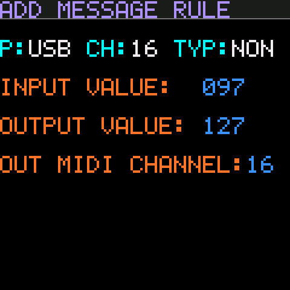
- Colours. Labels are orange and values you can change are blue. The focused field is inverted: black on blue. Only one field has the focus at a time.
- Moving and changing. SELECT moves the focus. ALGORITHM changes the value; OCT−/OCT+ step it one at a time. Channel fields cycle 16 → 1.
- Channels from the keys. On most pages the 16 white keys pick a channel directly. The key for the current channel is lit.
- Page buttons. Every button that opens a page is lit, on every page: HOME, EDIT, FX, SEL, SAVE and ARP. Pressing one again cycles through its pages. The first press from another group always opens the group's first page.
- Changes apply at once to the patch in use, so you can hear the effect while you edit. Save to a patch slot to keep them (Patches). The rule pages are the exception: a rule is only added when you save it with REC.
Two-press confirmation. REC actions that lose data (clear, delete, save) need a second press. After the first press the REC LED flashes quickly; press it again within 5 seconds to confirm. Any other control cancels.
The MIDI pipeline
Every message from TRS or USB goes through the same stages, in this order. The filters are set separately for each input port, and every stage is part of the patch. The labels in italics give the colour each outcome has in the monitor.
- Filters drop messages: first by channel, then by type.
- Event triggers watch what passes the filters, before any remap. When one fires, its messages go straight to the output, after the message that fired it.
- Message Remap changes note, CC or program numbers and can move them to another channel. Channel Remap then moves whole channels, including the output of a message rule.
- Knob CCs and Live Keys notes go straight to the output too.
- MIDI clock from more than one input is never merged: one input owns it (MIDI clock).
- Active Sensing (FE) and the undefined system messages F4, F5, F9 and FD are dropped on arrival: never shown, never passed on.
- SysEx up to 128 bytes is passed on in order with other messages. Longer SysEx is shown in the monitor but not passed on.
MIDI Monitor HOME
The start-up page. It lists the last 100 messages received on any input, as they arrived and before the pipeline. The newest is at the bottom.
Columns: P port (T, U, B), CH channel, TYP type, then data 1 and data 2. Notes are shown by name with 60 = C4. Pitch bend is one signed value (−8192 to +8191), and SysEx is shown as its length, e.g. SYX 6B.
Row colours show what the pipeline did:
- White: passed unchanged.
- Dark grey: blocked by a filter.
- Dark yellow: changed by a remap rule.
- Teal: fired an event trigger (wins over yellow).
MIDI clock isn't listed. Instead CLK in the title blinks with the beat while clock arrives.
| Control | Action |
|---|---|
| SELECT, OCT−/OCT+ | Scroll back through the history (OCT− goes back, OCT+ forward). While scrolled back, the view stays put as new messages arrive, and the amber number at the top right shows how many rows back you are. |
| REC | Clear the list (two presses). REC is lit on this page. |
| C#5, D#5, F#5, F5, G5 | Shortcuts that build a rule or trigger from the selected message (below). |
| Shown as | Message | Shown as | Message |
|---|---|---|---|
NON | Note On | SYX | System Exclusive (length in bytes) |
NOF | Note Off, or Note On with velocity 0 | MTC | MIDI Time Code quarter frame |
PAT | Polyphonic aftertouch | SPP | Song Position Pointer |
CC | Control Change | SS | Song Select |
PC | Program Change | TR | Tune Request |
CAT | Channel aftertouch | STA CON STP | Start, Continue, Stop |
PB | Pitch bend | RST | System Reset |
Shortcuts: make a rule from a message
Scroll so the message you want is the bottom row, then press one of the last three black keys, or one of the last two white keys. Each key is lit only when it applies to the selected message.
| Key | Makes | Works for | What happens |
|---|---|---|---|
| C#5 | Message rule | Notes, CC, PC | Opens Add Message Rule with the message's port, channel, type and value filled in, and the output set to the same value. If a rule for that value already exists, it opens that rule. Nothing changes until you save with REC. |
| D#5 | Channel rule | Any channel message | Opens Add Channel Rule with the message's port and channel, output set to the same channel, or the existing rule for that channel. |
| F5 | Rule Builder IN | Notes, CC, PC | Puts the message's port, channel, type and value into the Rule Builder's IN and opens it. |
| G5 | Rule Builder OUT | Notes, CC, PC | Puts the message's channel and value into the Rule Builder's OUT and opens it. |
| F#5 | Trigger | NON, NOF, CC, PC | Adds a trigger at once and opens it: D1 is the message's value, D2 is 0–127 (1–127 for Note On), Pass Input YES, Fire ENTER. Then add its messages with PLAY. |
Search: show only some messages
The first five black keys, printed OP1–OP5 on the panel, search the monitor. A search only hides rows on screen. MIDI is never affected, and every message is still recorded, so turning a search off brings everything back.
| Key | Searches by | Settings |
|---|---|---|
| OP1 (F#3) | Port | TRS, USB, BLE: each INC (show) or EXC (hide) |
| OP2 (G#3) | Channel | 1–16, each INC or EXC. The white keys toggle channels. |
| OP3 (A#3) | Message type | Each of the 16 types INC or EXC |
| OP4 (C#4) | Data 1 | FROM–TO range; INC shows only values inside it, EXC hides them |
| OP5 (D#4) | Data 2 | The same, for data 2 |
- Short press a key to turn its search on or off. Its key LED is lit while it's on, and SRCH shows in the monitor's title.
- Hold a key (a little under a second) to open its search page. Holding another OP key switches pages, and HOME goes back to the monitor. On a search page, SELECT moves between fields, ALGORITHM and OCT± change them, and STATE turns the search on or off.
- Searches add up: with USB and channel 10 both selected, you see only USB channel 10.
- System messages have no channel, so the channel search lets them through; hide them with the type search. A message without data 1 or data 2 counts as outside the range, so "D1 060–060 INC" shows only messages whose data 1 is 60.
- Scrolling, the selected row and the shortcuts use only the shown rows.
NO MATCHESmeans nothing in the last 100 messages passes. - Searches aren't saved; they start off at power-up.
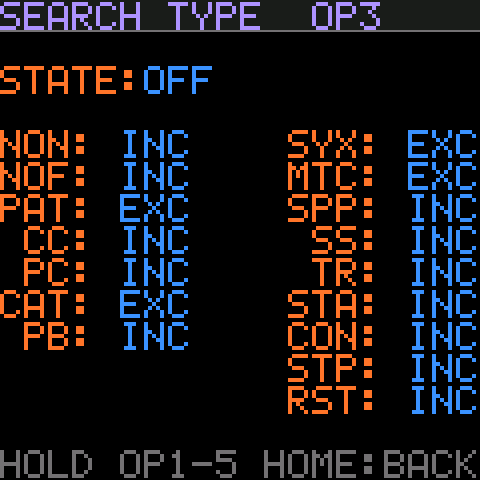
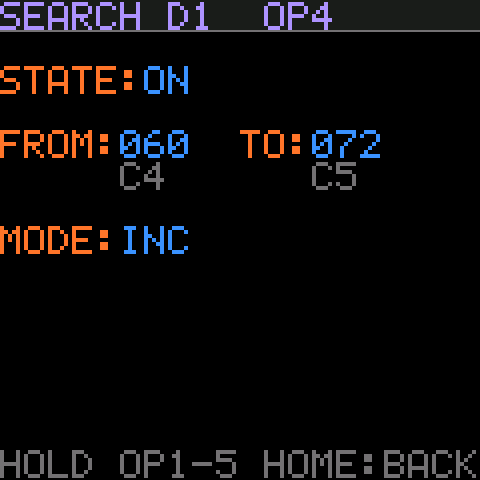
Filters FX
Both filter pages edit one input port at a time, chosen in IN PORT. The port you pick is shared between the two pages. By default everything passes.
Channel Filter
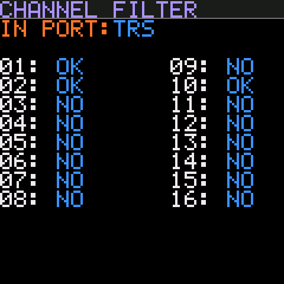
Choose which of the 16 channels pass from the selected port. OK passes, NO blocks.
- The 16 white keys toggle their channel from any field, and are lit while their channel passes. This is the quickest way to use the page.
- SELECT moves through IN PORT and channels 1–16; ALGORITHM or OCT± flip the focused one.
Message Filter
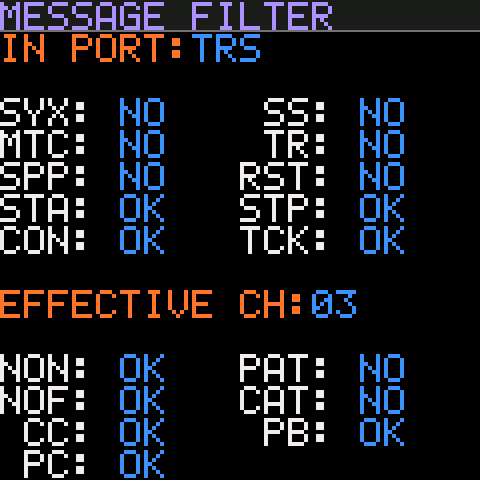
Choose which message types pass. The top block is system messages, set per port: SYX, MTC, SPP, STA, CON, SS, TR, RST, STP and TCK (clock). The bottom block is channel messages, set per port and per channel: NON, NOF, CC, PC, PAT, CAT and PB.
- EFFECTIVE CH picks which channel the bottom block shows. The white keys set it from any field; its key is lit.
- SELECT moves down each column in turn; ALGORITHM or OCT± flip OK/NO.
- Note On with velocity 0 counts as Note Off (NOF).
- The FM-1's own patch SysEx always gets through, whatever SYX is set to.
Remaps FX
Remap rules change messages that pass the filters. Message rules run first, then channel rules, so a message rule's output channel can be remapped again.
Message Remap
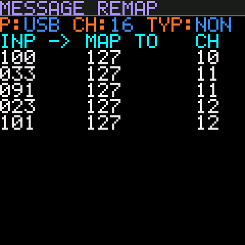
A message rule changes data 1 (the note, CC or program number) and sets the output channel. Rules are listed per input Port, CHannel and TYPe, shown in the header. Each row is INP -> MAP TO CH.
- TYP is NOTE, CC or PC. A NOTE rule applies to Note On, Note Off and poly aftertouch for that note, so a remapped note is always released.
- SELECT steps P → CH → TYP → the rules → + NEW RULE. ALGORITHM and OCT± change the header field, or scroll the rules. The white keys set CH.
- PLAY on a rule opens it; on + NEW RULE (or the header) adds one.
- REC deletes the selected rule (two presses).
- Up to 32 rules per list, 256 in a patch.
Add Message Rule sets the INPUT VALUE, OUTPUT VALUE and OUT MIDI CHANNEL. Port, channel and type come from the list and are shown in white. For notes, the note names are shown under the values.
- The white keys set the output channel.
- REC twice saves the rule and returns to the list. If a rule for that input already exists, REPLACES A RULE warns you first.
- FX returns to the list without saving.
Channel Remap
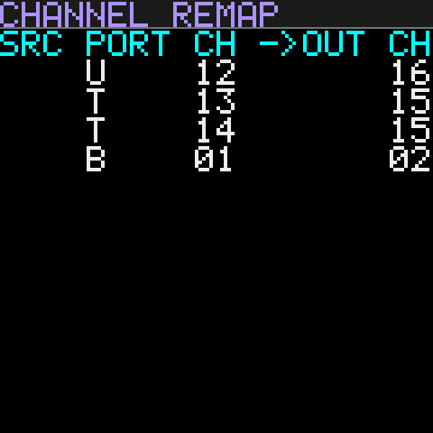
A channel rule moves everything from one port's channel to another channel. Up to 32 rules.
- SELECT, ALGORITHM and OCT± move through the list.
- PLAY opens the selected rule, or adds one from + NEW RULE.
- REC deletes the selected rule (two presses).
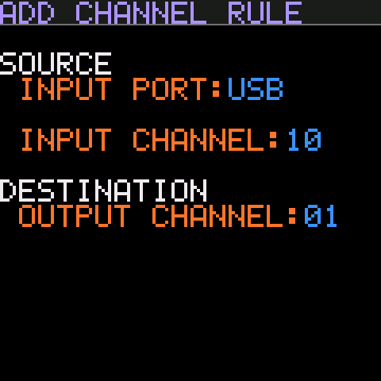
Add Channel Rule sets INPUT PORT, INPUT CHANNEL and OUTPUT CHANNEL. The white keys set the focused channel. REC twice saves; FX returns without saving.
Rule Builder GLO
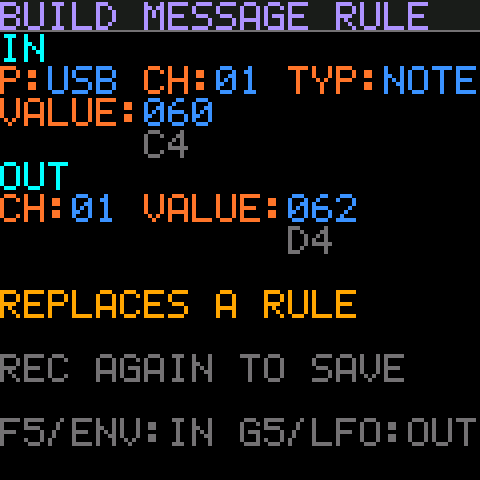
Build Message Rule is a scratchpad for message rules: take the input from one message and the output from another, then save. For example, to turn the note your keyboard sends into the note your drum machine wants:
- On the monitor, select the incoming note and press F5 (IN).
- Press GLO to go back, select the note you want and press G5 (OUT). Or go to Live Keys, play it, and press LFO.
- Press REC twice. The rule is added to its Message Remap list and the scratchpad clears.
- GLO opens the page from anywhere, and pressing it again returns to the page you came from. The monitor keeps the same row selected.
- F5/G5 on the monitor, and ENV/LFO on Live Keys and Knobs Config, fill IN/OUT. Live Keys gives the last note or program change it sent; Knobs Config gives the focused knob's CC. Their port is USB; change it on the page if needed.
- IN and OUT must be the same kind of message: a rule changes a note number, a CC number or a program, but can't turn one into another.
TYPE MISMATCHin red means REC won't save. - Every field can be edited with SELECT, ALGORITHM and OCT±, and the white keys set the focused channel. An empty half (
---) starts at USB, channel 1, note 60. - A rule for the same input is replaced (
REPLACES A RULE). A full list showsLIST FULL (32). - The scratchpad isn't part of a patch. It survives page changes and patch loads, and clears at power-off. Save the patch to keep the rules you add.
Event Triggers SEL
An event trigger watches for one kind of message and, when it arrives, sends a list of other messages. Example: a foot controller sends Program Change 5, and the FM-1 sends bank select and program changes to every synth in a rack.
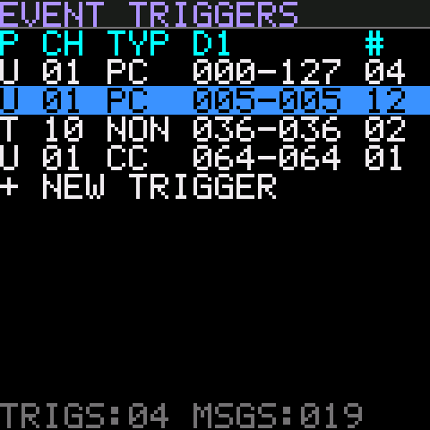
The list shows each trigger's port, channel, type, D1 range and number of messages (#). Triggers fire in list order. The footer counts triggers and messages in the patch.
- SELECT, ALGORITHM and OCT± move the selection.
- PLAY opens the selected trigger; on + NEW TRIGGER it adds one (USB, channel 1, PC 0–127) and opens it.
- REC deletes the selected trigger (two presses).
- A message count in red means triggers above it could use up the 64-message limit, so some of its messages may not be sent.
Edits apply at once; there is no save step for triggers. A half-edited trigger fires while you work on it. Save the patch to keep them.
How a trigger matches
- Port and channel are equal, and the type matches: NON (Note On, velocity 1–127), NOF (Note Off, or Note On velocity 0), CC or PC.
- Data 1 (note, CC or program number) is inside the D1 range, and data 2 (velocity or CC value) is inside the D2 range. PC has no data 2.
- Triggers see messages after the filters and before the remaps, so a blocked message never fires one. They match the values the monitor shows.
- Several triggers can match one message; all of them fire, in list order. One input message sends at most 64 trigger messages.
- Trigger messages go straight to the output. They aren't filtered or remapped and can't fire other triggers, so there are no loops.
Edit Trigger
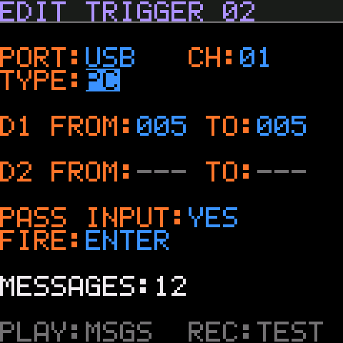
| PORT, CH | Input port and channel. The white keys set CH. |
| TYPE | NON, NOF, CC or PC. |
| D1 FROM / TO | Range of note, CC or program numbers. For notes, the names are shown underneath. |
| D2 FROM / TO | Range of velocities or CC values. Shown as --- for PC. |
| PASS INPUT | YES: the triggering message also continues through the remaps to the output. NO: it is swallowed when the trigger fires. |
| FIRE | ENTER: fire once when a CC value moves into the D2 range, and again only after it has left. EVERY: fire on every matching message. For notes and PC they behave the same. |
FROM can't pass TO: raising FROM pushes TO up and vice versa. PLAY opens the trigger's messages. REC sends them now as a test, without the foot controller. SEL goes back to the list.
ENTER and expression pedals. With a pedal on CC 11 and a D2 range of 100–127, EVERY fires on each value as the pedal moves through the range, perhaps 30 times in one press. ENTER fires once as it crosses into the range.
Trigger Messages
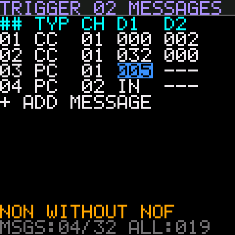
The messages this trigger sends, top to bottom. Each row has a type (NON, NOF, CC, PC), channel, D1 and D2. Up to 32 messages per trigger and 256 in a patch.
- SELECT moves cell by cell: TYP → CH → D1 → D2, row by row, then + ADD MESSAGE.
- ALGORITHM and OCT± change the cell. D1 and D2 can also be IN: copy that value from the message that fired the trigger. For example, a NON row with D2 = IN passes the played velocity on.
- PLAY inserts a copy of the row below it; on + ADD MESSAGE it adds CC 0 on channel 1.
- REC deletes the row (two presses). SEL goes back to Edit Trigger.
- NON WITHOUT NOF warns that the list has more Note Ons than Note Offs, which can leave notes hanging.
Knobs Config EDIT
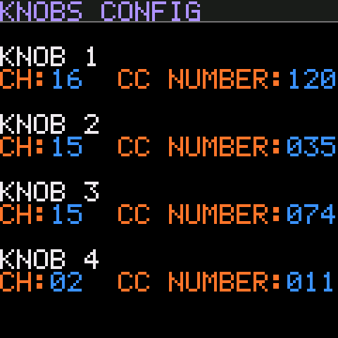
KNOB 1–4 each send a CC, from any page. Here you set each knob's channel and CC number (0–119). Defaults: channel 1, CC 20–23.
- Each knob keeps a value from 0 to 127 and sends it as an absolute CC whenever you turn it. Values start at 0 at power-up and aren't stored.
- The current value is shown as a bar under each knob's fields.
- Knob CCs go straight to the output, not through the pipeline.
- SELECT moves through the 8 fields; ALGORITHM and OCT± change them. On a channel field the white keys pick the channel.
- ENV/LFO send the focused knob's CC to the Rule Builder's IN/OUT.
MIDI clock
If more than one input sends MIDI clock, the FM-1 never merges them. One input owns the clock, and clock messages from the others are dropped. This is always on, and it happens after the filters.
- Taking control: the first input to send START (or CONTINUE) takes the lock. While it holds it, START, STOP, CONTINUE, clock ticks and Song Position from every other input are dropped.
- Letting go: STOP from the owner releases the lock, and any input can then take over with START or CONTINUE. Until one does, the old owner's ticks keep passing. Many devices send clock even while stopped.
- Before anyone presses START, the first input to send any clock message is the owner.
- Unplugged sources: if the owner sends nothing for 2 seconds, it's forgotten and the next input to send clock takes over.
- Dropped START, STOP and CONTINUE messages show dark grey in the monitor. The monitor's CLK blinks with the owner's clock only.
- The Message Filter still applies first: a port with STA set to NO can never take control.
Metronome EDIT
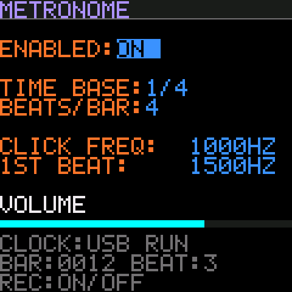
A click on the headphone/line output that follows the incoming clock. It plays from every page while it's enabled and the clock is running, from START or CONTINUE until STOP.
| ENABLED | ON or OFF. REC also toggles it from any field, as a quick mute; REC is lit while it's on. |
| TIME BASE | One click per 1/4, 1/8, 1/16 or 1/32 note. |
| BEATS/BAR | Clicks per bar (1–16). The first click of each bar uses the 1ST BEAT tone. For 4/4 in eighths, use 1/8 with 8 beats. |
| CLICK FREQ | Tone of the other clicks, 200–4000 Hz. ALGORITHM steps 10 Hz, OCT± 100 Hz. |
| 1ST BEAT | Tone of the first beat of each bar. |
- Volume is the MASTER knob. MASTER only sets the click volume. Audio passing through from USB or Bluetooth plays at the computer's or phone's own volume.
- The click isn't sent back to the computer over USB audio, so it won't end up in recordings.
- START counts from bar 1, beat 1. CONTINUE carries on, or starts from the Song Position your DAW sent, so the accent stays on the downbeat.
- Metronome settings belong to the FM-1, not to a patch, so changing patches doesn't change the click. They're saved when you leave the page.
Clock Monitor SEQ
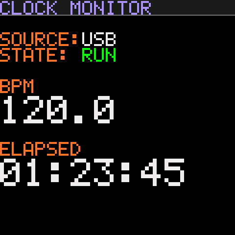
A read-only view of the clock, readable from across the room.
- SOURCE: the input that owns the clock: TRS, USB, BLE, or NONE.
- STATE: RUN from START or CONTINUE, STOP after STOP.
- BPM: measured from the clock, to one decimal, averaged over the last two beats. It shows
---.-when no clock has arrived for a second. It is only measured while this page is open. - ELAPSED: hours, minutes and seconds since the last START. It pauses on STOP and carries on with CONTINUE.
Live Keys ARP
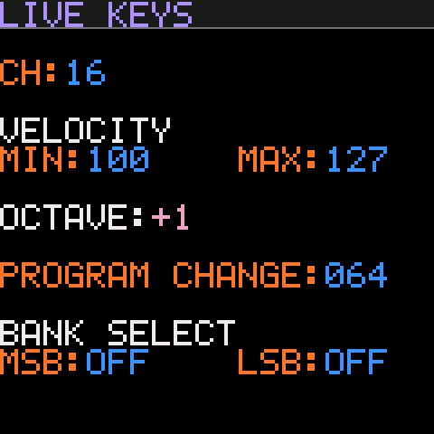
On this page the 27 keys play notes on the chosen channel, straight to the output. Each note gets a random velocity between MIN and MAX, for a more human feel.
- OCT−/OCT+ shift the keys by an octave (−3 to +3). At octave 0 the lowest key is F3.
- PROGRAM CHANGE (1–128) and BANK SELECT MSB/LSB (or OFF): REC sends the bank select, then the program change.
- Leaving the page releases any keys still held.
- ENV/LFO send the last note played, or the last program change sent, to the Rule Builder's IN/OUT. They light up once there's something to send.
- Defaults: channel 1, velocity 100–127, octave 0, program 1, bank OFF.
Patches SAVE
A patch holds everything you set up: name, filters, remap rules, event triggers, knob channels and CCs, and Live Keys settings. There are 16 patch slots. The patch you're editing is the edit buffer; changes go there at once, and stay until you load another patch or switch off. At power-up the FM-1 loads the last patch you loaded or saved.
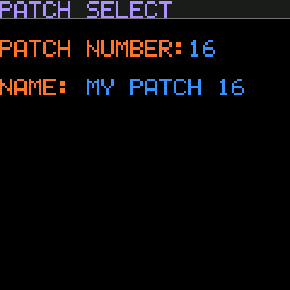
- PATCH NUMBER is the slot that PLAY and REC act on. The white keys pick 1–16. Browsing numbers loads nothing; the page shows what's STORED in that slot and what's IN USE.
- NAME: up to 12 characters. SELECT moves the cursor through the name; ALGORITHM picks each character (A–Z, 0–9, dash, space).
- PLAY loads the slot at once; unsaved changes are dropped. An empty slot loads the defaults.
- REC twice saves the edit buffer into the slot.
- A
*in the title means unsaved changes. After a load or save, the status line shows how long Flash took. MIDI pauses for that time.
Sysex Dump
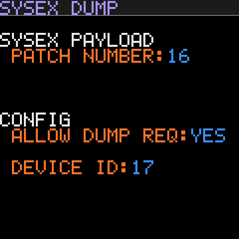
Back up patches to a computer, or let an editor or librarian read and write them.
- PATCH NUMBER (1–16 or ALL) picks what to send; REC sends it to USB MIDI OUT at once. Stored patches are sent, not unsaved edits.
- ALLOW DUMP REQ: whether the FM-1 answers dump requests.
- DEVICE ID (0–127): the FM-1 only answers SysEx with this exact ID.
- Received dumps overwrite without asking. The page counts patches received, rejected and requests answered: handy when testing an editor.
To restore a backup, send the saved .syx back to the FM-1 with any SysEx tool. tools/patch_sysex.py in the repository does both directions.
SysEx reference
All patch messages use this header. 7D is the manufacturer ID reserved for non-commercial use.
F0 7D <device id> 11 <command> <data…> F7| Command | Meaning | Data |
|---|---|---|
00 | Single patch dump | One or more dump packets |
01 | All patch dump | Packets for patches 0–15, in order |
10 | Single patch request | Patch number 0–15, or 7F for the edit buffer |
11 | All patch request | none |
- Patches are numbered 0–15 in SysEx (1–16 on screen).
7Fis the edit buffer: a dump to7Freplaces the patch in use without writing Flash, which is ideal for auditioning from an editor. - A patch is sent as 1–32 packets:
patch, index, count, payload…, checksum. The payload is up to 98 patch bytes, 7-bit packed (each group of 7 bytes is preceded by a byte holding their top bits). The checksum makes the packet bytes sum to a multiple of 128. - A missing, repeated or bad packet discards that patch; nothing partial is applied. Requests are only answered when Allow Dump Request is YES.
The full byte layout of a patch is in design/patch-format.md in the repository.
Examples, with device ID 0:
F0 7D 00 11 10 7F F7 request the edit buffer
F0 7D 00 11 10 02 F7 request patch 3
F0 7D 00 11 11 F7 request all 16 patchesLimits
| Item | Limit |
|---|---|
| Patches | 16 |
| Message rules | 32 per port/channel/type list, 256 per patch |
| Channel rules | 32 per patch |
| Event triggers | 32 per patch |
| Trigger messages | 32 per trigger, 256 per patch, 64 sent per input message |
| Monitor history | 100 messages |
| SysEx passed through | up to 128 bytes per message |
Troubleshooting
- Nothing comes out of USB.
- Check the monitor. Grey rows were blocked by a filter: look at Channel Filter and Message Filter for that port. If nothing appears at all, the message isn't reaching the FM-1.
- A note gets stuck.
- A trigger that sends Note On without a matching Note Off leaves it hanging; Trigger Messages warns with NON WITHOUT NOF. Message rules always remap Note Off with its Note On, so they don't cause this.
- A trigger fires too often from a pedal.
- Set FIRE to ENTER so it fires once per entry into the D2 range.
- The flash page can't find the FM-1.
- Use desktop Chrome or Edge, allow MIDI device control, close every other program using the FM-1's MIDI port, and use a data-capable USB cable. If an update was interrupted, reconnect and press Install again; it resumes from the loader.
- No metronome click.
- Check that ENABLED is ON, MASTER is turned up, and the clock is running: the Clock Monitor should show RUN. The click only plays between START (or CONTINUE) and STOP.
- Clock from my second device is ignored.
- Another input owns the clock. Send STOP from the owner, then START from the device you want; or unplug the owner and wait 2 seconds.
- Headphone audio from the computer is too loud or quiet.
- MASTER now only sets the metronome. Set pass-through audio with the computer's or phone's volume.
- The Rule Builder says TYPE MISMATCH.
- IN and OUT came from different kinds of message, such as a note and a CC. Rules can't change the message type; set OUT from a message of the same kind.
- My edits disappeared.
- Edits live in the edit buffer until saved. Loading a patch, receiving a dump for the patch in use, or switching off drops them. Look for the
*on Patch Select.
FM-1 MIDI Processor is unofficial firmware, based on the FM1 Open SDK, and isn't made or supported by M-VAVE. Use it at your own risk.